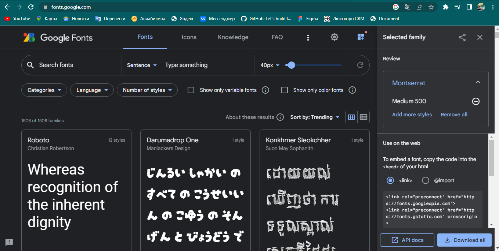
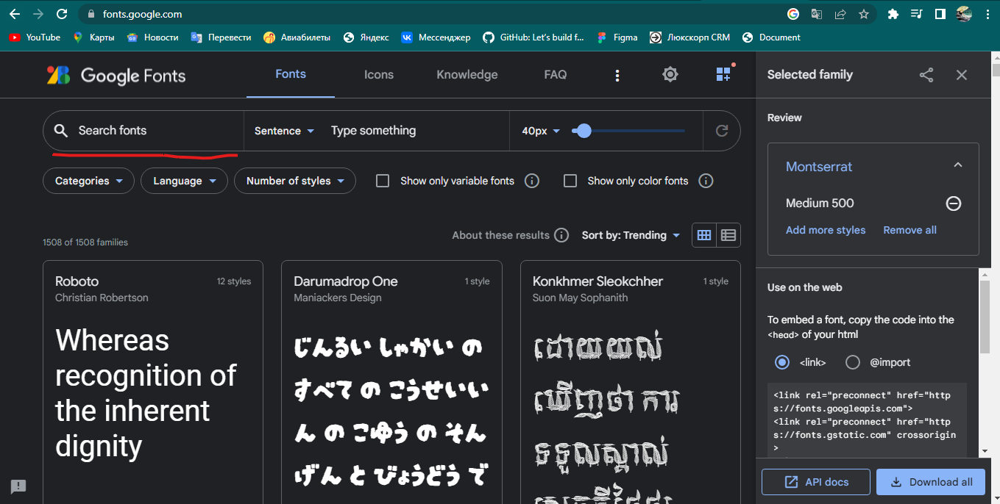
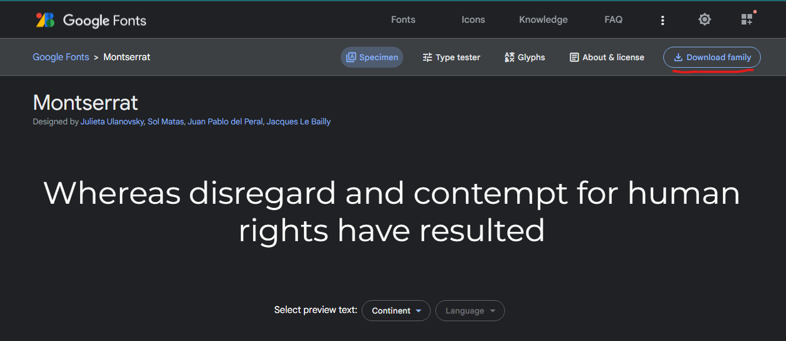
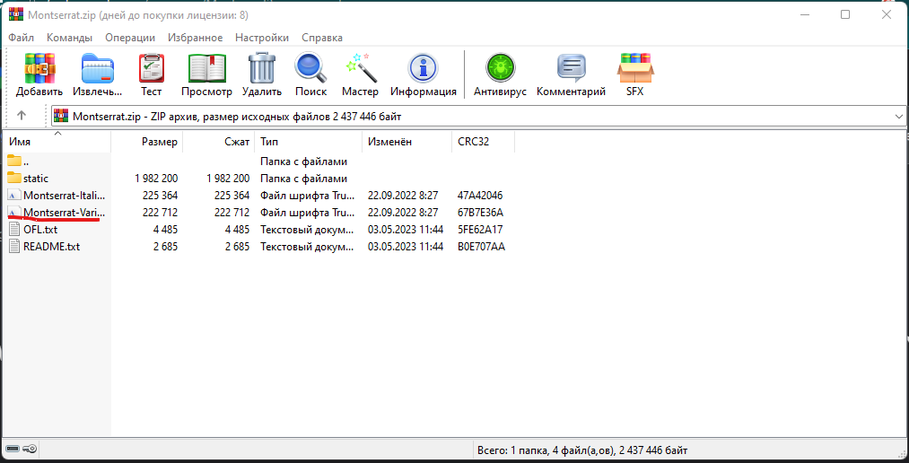
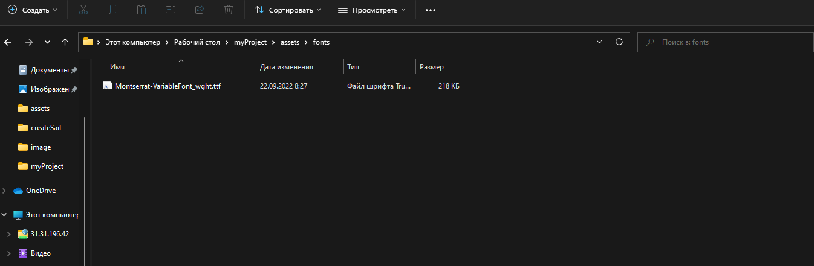
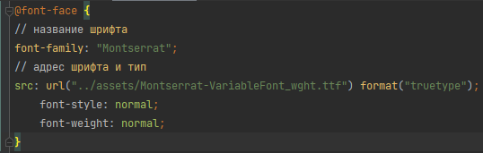
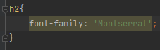

Скачиваем и подключаем шрифты
Назад
-
Шрифты это один из главных элементов дизайна, ведь без шрифтов сайт выглядит сухо и нудно.
-
1) Первым делым мы должны найти нужные нам шрифты, предлагаю для этого обратится к сервису GoogleFonts.
На данном сервисе можно найти большенство шрифтов которые вам нужны.


-
2) Далее нужно выбрать нужный вам шрифт.

И нажать на кнопку скачать шрифт.

У вас скачается архив с данным семейством шрифтов. В этом архиве нужно найти универсайльный файл шрифта который включает в себе все стили.

Перекидываем этот файл в папку со шрифтами вашего сайта.
-
3) Следущем шаг будет подключения нашего шрифта в нашем основном фале стилей.

Где с помощью правила @font-face мы указываем название шрифта и путь к фалу со шрифтом.

Назад